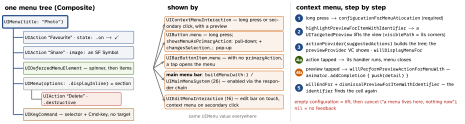

ios-platform · folio
In one line: A menu is a value tree of UIMenuElements — UIMenu (a group) holding
UIAction (a closure), UICommand (a selector sent up the responder chain) and
UIDeferredMenuElement (loaded lazily). The same tree is shown by many presenters:
a context-menu interaction (with a preview), a button, a bar item, the edit menu, the main
menu bar (Mac; iPad since iPadOS 26).
Download PDF Print view LaTeX source


How it works
UIAction: title, subtitle, image, handler; attributes.disabled,.destructive,.hidden,.keepsMenuPresented(16); state.on/.off/.mixed.UIMenuoptions:.displayInline,.singleSelection(radio),.displayAsPalette(17);preferredElementSize.small/.medium/.large(16). Children are fixed: build a new menu and re-assignbutton.menu.- Deferred:
UIDeferredMenuElement { completion in … }(14) is cached after the first load;.uncached(15) re-asks each time. iOS 26.usingFocus(identifier:shouldCacheItems:): the focused responder’sprovider(for:)fills it — per-window main-menu items. - Context menu: add a
UIContextMenuInteraction(delegate:)to the view, or in a list implementcontextMenuConfigurationForItemsAt:point:(16):[]= empty space, several paths = multi-selection.previewProvidernil= snapshot of the view. - Main menu:
override buildMenu(with builder:)in the app delegate (13):builder.system == .main,insertChild(_:atStartOfMenu:),remove(menu:);UIMenuSystem.main.setNeedsRebuild(). iPadOS 26 menu bar:UIMainMenuSystem.shared.setBuildConfiguration(config) { builder in … }, once at launch; storyboard menu bars unsupported. iOS 18: commands reach iPhone apps too (iPhone Mirroring). - Validation = responder chain: a
UICommandhas no target — UIKit walks up from the first responder to the first one whosecanPerformAction(_:withSender:)istrue; adjust title/state invalidate(_ command:). None → disabled. - Edit menu:
UIEditMenuInteraction(16) replacesUIMenuController:presentEditMenu(with: UIEditMenuConfiguration(identifier:sourcePoint:)); delegatemenuFor:suggestedActions:. Text views:editMenuForTextIn:suggestedActions:. - Pointer (iPadOS 13.4):
UIPointerInteraction→UIPointerStyle(effect: .highlight/.lift/.hover); buttons:isPointerInteractionEnabled. Drag & drop (11):UIDragInteractionreturns[UIDragItem];UIDropInteraction:canHandle→UIDropProposal(.copy/.move)→performDrop; drag is off by default on iPhone(unverified).
Example — cell menu with preview, pop-up sort button
func collectionView(_ cv: UICollectionView, contextMenuConfigurationForItemsAt
ips: [IndexPath], point: CGPoint) -> UIContextMenuConfiguration? {
guard ips.count == 1,
let id = ds.itemIdentifier(for: ips[0]) else { return nil }
return UIContextMenuConfiguration(identifier: id as NSString, // NSCopying
previewProvider: { DetailVC(id: id) }) { _ in
let del = UIAction(title: "Delete", attributes: .destructive) {
[weak self] _ in self?.delete(id) }
let share = UIDeferredMenuElement.uncached { [weak self] done in
Task { done(await self?.shareActions(id) ?? []) } } // spinner first
return UIMenu(children: [share,
UIMenu(options: .displayInline, children: [del])]) } } // a section
sortBtn.menu = UIMenu(options: .singleSelection, children: sorts.map { s in
UIAction(title: s.title, state: s == sort ? .on : .off) { _ in pick(s) } })
sortBtn.showsMenuAsPrimaryAction = true // pull-down ...
sortBtn.changesSelectionAsPrimaryAction = true // ... + this = pop-upA button with a menu — what the flags do
menu | showsMenu… | changes… | behaviour |
|---|---|---|---|
nil | — | true | toggle: flips isSelected |
| set | false | false | tap = primary action, long press = menu |
| set | false | true | toggle + long-press menu |
| set | true | false | pull-down: menu on touch-down |
| set | true | true | pop-up: tracks selection, title follows |
Traps
- “The button’s menu never shows” — without
showsMenuAsPrimaryActionit is a long-press menu. IndexPathcaptured in a handler or used as the identifier — the diffable snapshot may move it; use the item id.- The control retains the menu, the menu its actions:
self→button→menu→handler→selfis a cycle —[weak self]. - Stale items in a deferred element: it is cached after the first load —
.uncached. - Menu-bar item always grey: nothing between the first responder and the app answers
canPerformActionwithtrue.
Remember
“One tree, many presenters; actions carry closures, commands ride the responder chain.” Context menu = configuration → preview → menu → commit.